図解：ロココ
ロココの成立と展開
- 1648
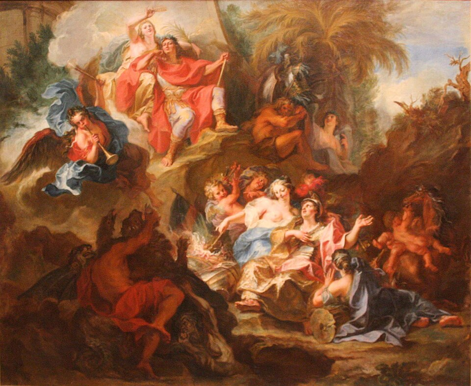
 太陽王とアカデミープッサンが頂点
太陽王とアカデミープッサンが頂点
王の栄光を称える - 1715
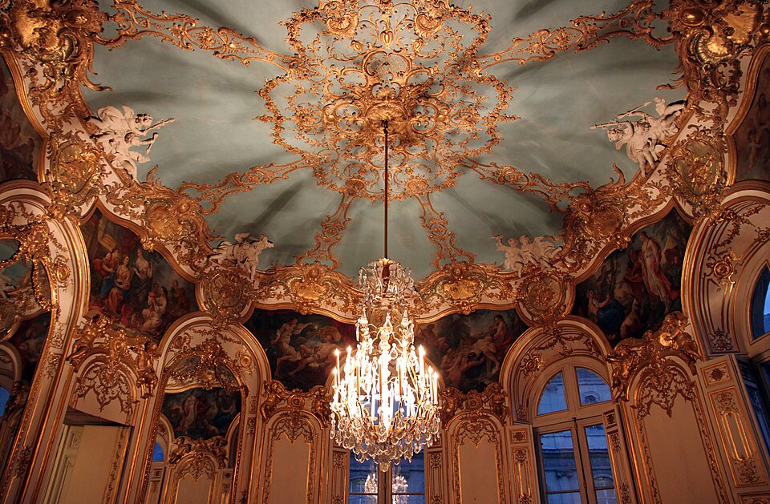
ルイ14世の死摂政期に貴族が解放
パリの邸宅が中心に - 18世紀前半
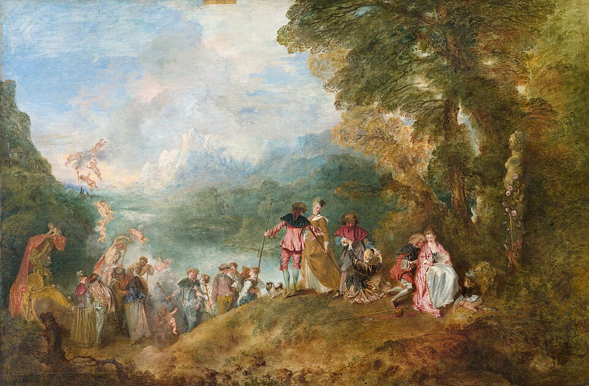
ヴァトーの雅宴画男女の優雅な集い
画面に漂う哀愁 - 18世紀中頃
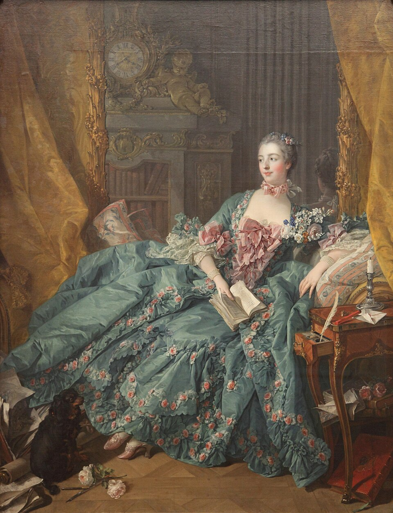
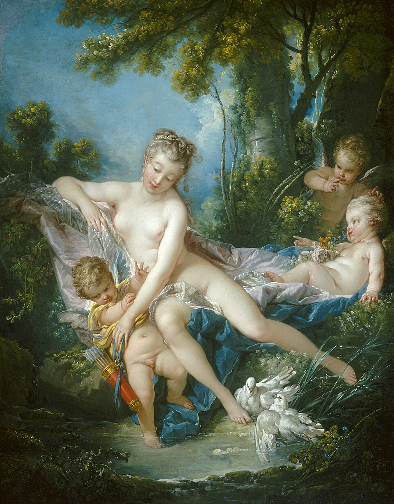
ポンパドゥール夫人ブーシェらを保護
ロココの最盛期 - 1789
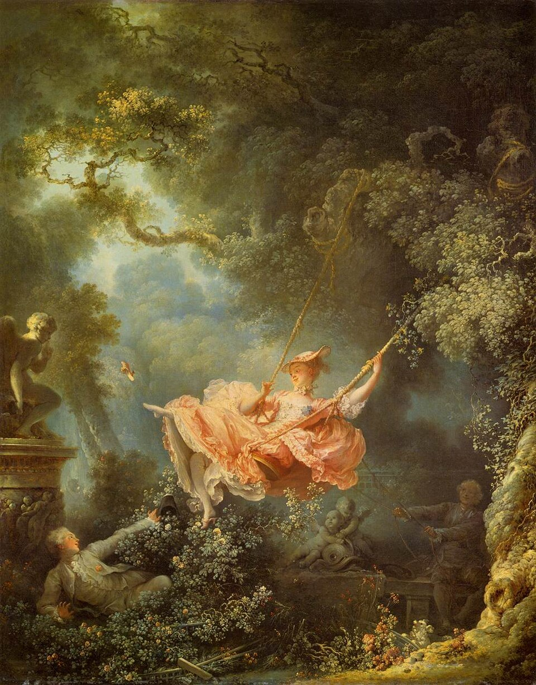
フラゴナールと革命ロココ最後の画家
革命で急速に衰退
太陽王の時代と何が違うか
オテルと呼ばれる私邸室内バロックの荘厳さ白い壁と金の枠芸術の役割王の栄光を称える生きる喜びを表す
自由を享受する貴族新しい絵画歴史画が頂点雅宴画
歴史画とは別の分類に
図版の出典
- 《ナイメーヘンの和約の後、栄光の懐に憩うルイ14世》アントワーヌ・コワペル：出典（CC BY-SA 3.0）
- 《アルカディアの牧人たち（第2作）》ニコラ・プッサン：出典（Public domain（PD-Art／Yorck Project））
- 《オテル・ド・スービーズ、公妃の楕円形サロン》ジェルマン・ボフラン：出典（CC BY-SA 3.0）
- 《シテール島の巡礼（シテール島への船出、1717年ルーヴル版）》アントワーヌ・ヴァトー：出典（Public domain（PD-Art））
- 《ポンパドゥール夫人》フランソワ・ブーシェ：出典（Public domain（PD-Art））
- 《ヴィーナスの水浴（アモールを慰めるヴィーナス）》フランソワ・ブーシェ：出典（CC0 1.0）
- 《ぶらんこ》ジャン＝オノレ・フラゴナール：出典（Public domain（PD-Art））
重要人物
王と宮廷・パトロン
 ルイ14世太陽王王の偉大さを伝えるため芸術を支援。1715年に死去
ルイ14世太陽王王の偉大さを伝えるため芸術を支援。1715年に死去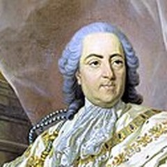
ルイ15世国王5歳で即位。成長後も政治への関心は薄かったとされる- ポンパドゥール夫人王の寵姫多くの芸術家のパトロン。セーヴル磁器を支える
- シャルル・ル・ブランアカデミー学長王立アカデミーを設立。ルイ14世の第一画家
フランスのロココ
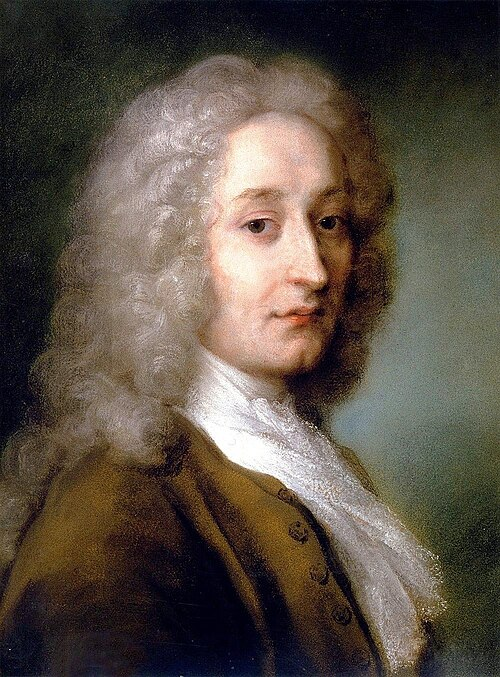
ヴァトー画家雅宴画を確立。華やかな日常に哀愁が漂う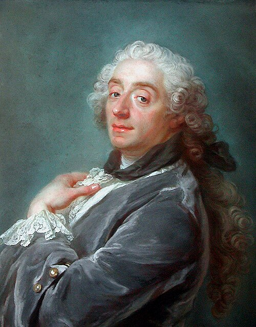
ブーシェ画家夫人が好んだ多作の画家。盛期ロココを代表- フラゴナール画家ブーシェの弟子。ロココ絵画の最後を飾る
- ファルコネ彫刻家夫人に重用され、のちにピョートル大帝騎馬像を制作
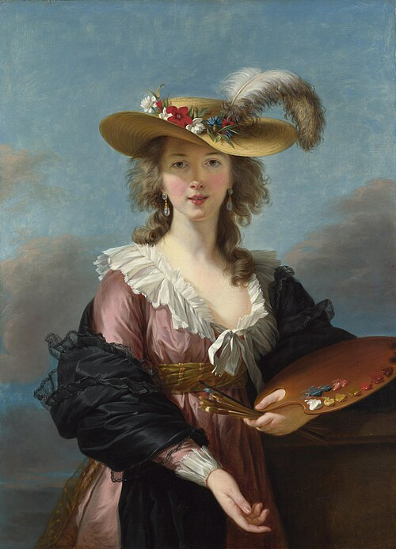
ヴィジェ＝ルブラン画家マリー・アントワネットの専属画家。革命で亡命
ロココとは異なる画風
イギリス・イタリア・スペイン
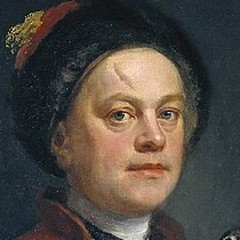
ウィリアム・ホガース画家《当世風の結婚》で社会を風刺- ジョシュア・レノルズ画家ロイヤル・アカデミー初代会長。主に肖像画を描く
- トマス・ゲインズバラ画家肖像画で人気。本当に描きたかったのは風景
- ティエポロ画家バロックを継ぎロココの色彩を取り入れる
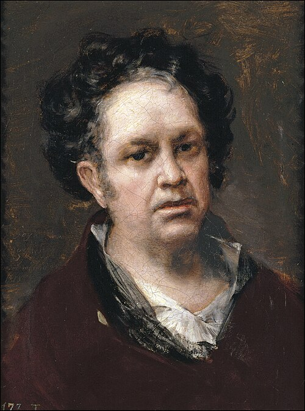
ゴヤ宮廷画家初期はスペインのロココを象徴。のち聴覚を失う
肖像・図版の出典
- 《ルイ14世の肖像》イアサント・リゴー、1701年、ルーヴル美術館：出典（Public domain）
- 《ルイ15世の肖像》ルイ＝ミシェル・ヴァン・ロー、1760年代、ヴェルサイユ宮殿：出典（Public domain）
- 《ポンパドゥール夫人》フランソワ・ブーシェ：出典（Public domain（PD-Art））
- 《アントワーヌ・ヴァトーの肖像》ロザルバ・カッリエーラ、1721年、パステル：出典（Public domain）
- 《フランソワ・ブーシェの肖像》グスタフ・ルンドベリ、1741年、パステル、ルーヴル美術館：出典（Public domain）
- 《麦わら帽子の自画像》ヴィジェ＝ルブラン、1782年以後、ロンドン・ナショナル・ギャラリー：出典（Public domain）
- 《画家と愛犬パグ》ウィリアム・ホガース（自画像）、1745年、テート・ブリテン：出典（Public domain）
- 《自画像》フランシスコ・デ・ゴヤ、1815年、サン・フェルナンド王立美術アカデミー：出典（Public domain）
ロココとは
ロココと曲線の装飾
動画 1:49～18世紀、フランスを中心に現れた新たな美術潮流がロココです。語源のフランス語「ロカイユ」は岩を意味し、主に人工洞窟を飾る岩や貝殻の装飾を指しました。英語の「ロック」にも通じる言葉です。建築や工芸などの装飾芸術では、直線よりも貝殻を思わせる曲線を多く用いることが特徴です。その成立には女性貴族の存在が大きく関わりました。芸術の中心がイタリアからフランスへ移り、イギリスも独自の様式を生み出した時代でした。

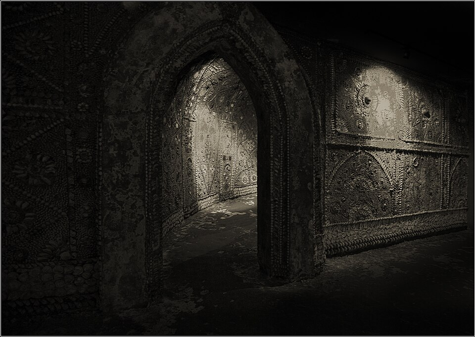
画像を拡大 ＋《シェル・グロット（マーゲート）》
- 作者
- 作者不詳
- 制作時期
- 制作年代不明（1835年発見）
- 所在地・所蔵
- 英国ケント州マーゲート
- 素材・形式
- 建築・室内装飾
出典・画像について
作者・所蔵が分からず、画面と同じ椅子の個体を確定できないため掲載保留。
《花文様の張地を用いた金彩アームチェア（個体未確定）》
- 作者
- 未確定
- 制作時期
- 18世紀初頭（画面表記、未確認）
- 所在地・所蔵
- 未確定
- 素材・形式
- 家具・工芸
出典・画像について
作者・所蔵が分からず、画面と同じ椅子の個体を確定できないため掲載保留。

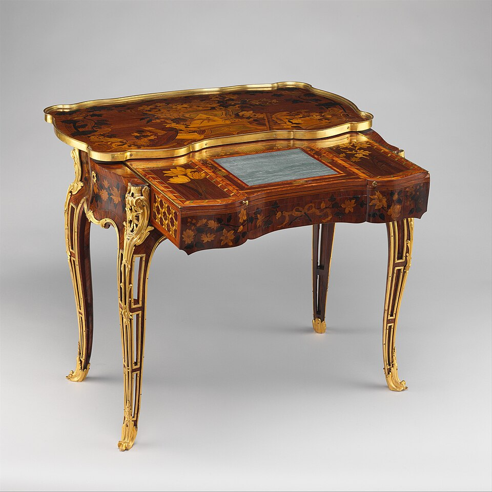
画像を拡大 ＋《メカニカル・テーブル》
- 作者
- ジャン＝フランソワ・オーベン、ロジェ・ヴァンデルクリューズ（ラクロワ）
- 制作時期
- 1761～1763年頃
- 所在地・所蔵
- メトロポリタン美術館（1982.60.61）
- 素材・形式
- 家具・工芸
出典・画像について
フランス王権と美術の制度
イタリア美術への憧れと宗教戦争
動画 2:47～16世紀、フランスは神聖ローマ帝国・スペインとイタリア戦争で争い、ナポリやミラノなどの統治権を求めました。しかし野望は実現せず、イタリアはハプスブルク家の勢力下に置かれます。戦地ではメディチ家の失脚やローマ劫掠が起こった一方、フランスは戦利品としてイタリア美術を得ました。
ルネサンス美術に感激したのが、1515年に即位したフランソワ1世です。「フランス・ルネサンスの父」とも呼ばれ、晩年のレオナルド・ダ・ヴィンチを保護しました。《モナ・リザ》がルーヴル美術館にあることも、この交流につながります。国王はイタリアの芸術家を招いて自国の美術を発展させようとし、フォンテーヌブロー派が生まれました。ただし、古典の様式を求めたのに、実際に来たのはマニエリスムの芸術家だったという、意図とのずれもありました。
同時期、神聖ローマ帝国ではルターの影響で宗教改革が起こりました。フランスへの波及は少し遅く、神学者カルヴァンの影響を受けました。予定説で知られるカルヴァンの教えは、ジュネーヴを拠点に広まります。フランスのプロテスタントはユグノーと呼ばれ、貴族もカトリックとユグノーに分かれ、16世紀後半にはユグノー戦争という内乱へ進みました。
ローマでは対抗宗教改革がバロック美術を生みましたが、フランスの事情は異なりました。1516年、フランソワ1世と教皇レオ10世が結んだボローニャ政教協約によって、国内の高位聖職者の任命に国王が大きな権限を持ったためです。教皇より国王の権力を優先する国家教会主義は、ガリカニスムと呼ばれます。国内の教会も国王に従うため、対抗宗教改革で制限された、教義に沿わない裸体表現なども、フランスでは制作されました。
内乱を終結へ導いたのが、ブルボン朝の始まりとなるアンリ4世です。ユグノーだった王はカトリックの反発を避けて改宗しましたが、ユグノーを見捨てず、ナントの王令で制限付きながら信仰と礼拝を認めました。難色を示すカトリックにも、ともによきフランス人として努力すべきだと諭したとされます。国内を安定させた王は「良王」と呼ばれ、広い人気を得ました。
国家理性と太陽王
動画 5:52～17世紀、フランスは大陸屈指の軍事力を持ち、国際的な影響を強めました。1618年、神聖ローマ帝国内のカトリックとプロテスタントの対立から三十年戦争が始まります。フランスは同じカトリックの皇帝軍ではなく、プロテスタント側を資金と軍事で支援しました。1635年にはスペインにも宣戦します。ブルボン家が、両国を治めるハプスブルク家を警戒していたからです。宗教よりも国家の存続と利益を優先する考えを、国家理性、レゾン・デタと呼びます。
こうした政策の基盤には、絶対王政がありました。「太陽王」ルイ14世には「朕は国家なり」という言葉が伝わりますが、実際に発言したかは確かではありません。王は自らの偉大さを民衆へ伝え、イメージを高めるため、芸術を支援しました。権力者の肖像も、こうした役割を果たしました。
王立アカデミーの設立
動画 7:09～フランスの美術界には、イタリアへ渡った芸術家が帰国しないという問題がありました。代表的なニコラ・プッサンも、ルイ13世に呼び戻されながら、生涯の大半をローマで過ごしました。外国への依存を避けようと、1648年、プッサンとともにローマで学んだシャルル・ル・ブランらが王立絵画彫刻アカデミーを設立します。
後の美術史では芸術家に対抗する存在として語られることもあるアカデミーですが、フランスの美術発展には大きく貢献しました。ル・ブランは1663年に学長を務め、ルイ14世の第一画家としても活躍します。王の保護と財務総監コルベールの政策により、会員だけが王室から注文を受けられる体制となりました。王の栄光を称える芸術家が、支援を受ける仕組みだったのです。
アカデミーは、16世紀にイタリア各地で生まれた組織を模倣し、芸術家の教育方法を確立しました。国家の支配下にあることで援助を受けられ、この形式はベルリン、ウィーン、ロンドンなどにも広まりました。一方、国家による統制は、美術を堅苦しくする面もありました。
色彩論争と絵画のヒエラルキー
動画 8:47～王立アカデミーを率いたル・ブランのもとでは、古典主義のプッサンが頂点に置かれました。輪郭線と素描を重視する人々はプッサン派、線より色彩を重視し、フランスでも活躍したフランドルのルーベンスに倣う人々はルーベンス派と呼ばれました。この争いは本人たちの死後に生まれたもので、二人が直接対立したわけではありません。
画像を拡大 ＋
《アルカディアの牧人たち（第2作）》
- 作者
- ニコラ・プッサン
- 制作時期
- 1637～1638年頃
- 所在地・所蔵
- ルーヴル美術館
- 素材・形式
- 絵画
出典・画像について

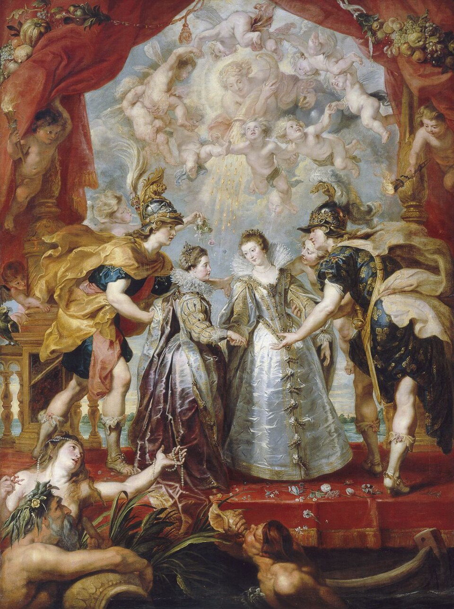
画像を拡大 ＋《フランスとスペインの王女の交換（《マリー・ド・メディシスの生涯》連作）》
- 作者
- ピーテル・パウル・ルーベンス
- 制作時期
- 1622～1625年頃
- 所在地・所蔵
- ルーヴル美術館（INV 1782）
- 素材・形式
- 絵画
出典・画像について
画面字幕は《マルセイユ上陸》ですが、実際に映る絵は《王女の交換》の部分。掲載は同じ原画の全図です。
画像出典：Peter Paul Rubens
Public domain（PD-Art／Yorck Project）
作品情報：作品・画像・利用条件
作品名の補足
画面に《マルセイユ上陸》と表示されますが、実際に映っている絵は、同じ連作の《フランスとスペインの王女の交換》です。二人の王女と左の黒服の人物などを照合し、実画の全図を掲載しました。
確認資料：ルーヴル作品台帳
アカデミーではプッサンやラファエロが至高の手本とされ、初めはプッサン派が優勢でした。それでも色彩を重視した作品が作られ、素描と色彩のどちらを重んじるかという「色彩論争」が続きます。18世紀のロココ絵画には、アカデミーが当初推奨した素描派への反発という面もありました。

《ナイメーヘンの和約の後、栄光の懐に憩うルイ14世》
- 作者
- アントワーヌ・コワペル
- 制作時期
- 1681年
- 所在地・所蔵
- ファーブル美術館、モンペリエ（D 803.1.7）
- 素材・形式
- 絵画
出典・画像について
作品情報：作品・画像・利用条件
さらに影響が大きかったのが、絵画のヒエラルキーです。歴史画を頂点に、肖像画、風俗画、風景画、静物画という序列が定められました。神に似せて作られた人間を描く絵画を高く評価し、複数の人間を表す歴史画を単独の肖像画より上とする考えです。国王や先祖を描く作品の価値を高める意図もあったのかもしれません。この序列は美術界を長く支配し、発展を妨げることにもなりました。
アカデミーの展覧会「サロン」は画家の登竜門となりました。その一方、審査する側に向けた作品が重視される保守的な姿勢は、後に大きな騒動を招きます。
ロココの誕生と雅宴画
摂政時代とパリの邸宅
動画 10:51～1715年、長く国を支配したルイ14世が亡くなりました。戦争による支出は、その後の財政を強く圧迫します。後継者ルイ15世はまだ5歳で、ルイ14世の甥にあたるオルレアン公フィリップ2世が摂政となりました。成長後のルイ15世も政治にあまり関心を示さなかったとされます。窮屈なしがらみを離れた貴族が、自由に生きる喜びを享受するなかから、ロココが生まれました。
ルイ14世の死後、政治の中心はヴェルサイユからパリへ移りました。貴族や富裕な市民は、オテルと呼ばれる邸宅を建てます。英語のホテルと同系統の語ですが、フランス語では大規模な私邸も意味します。現在は国立公文書館として知られるオテル・ド・スービーズも、もとは貴族の邸宅でした。白を基調とした壁と金の枠を組み合わせ、バロックの荘厳さとは異なる洗練された室内が生まれました。

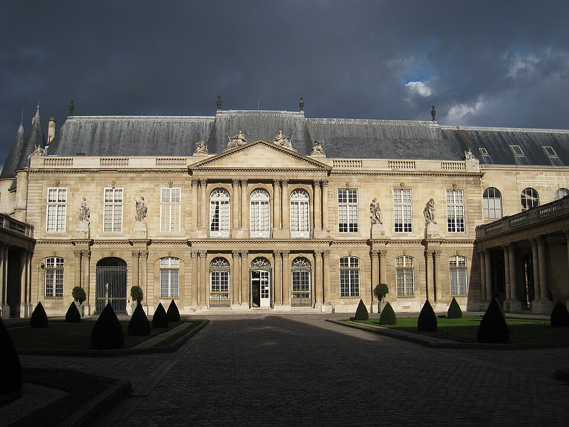
画像を拡大 ＋《オテル・ド・スービーズ（正面外観）》
- 作者
- ピエール＝アレクシ・ドラメール（改築）
- 制作時期
- 1705～1709年頃の改築
- 所在地・所蔵
- フランス国立公文書館パリ館
- 素材・形式
- 建築・室内装飾
出典・画像について

《オテル・ド・スービーズ、公妃の楕円形サロン》
- 作者
- ジェルマン・ボフラン
- 制作時期
- 1735～1739年
- 所在地・所蔵
- フランス国立公文書館パリ館
- 素材・形式
- 建築・室内装飾
出典・画像について
雅宴画とヴァトー
動画 12:11～ロココの時代には家具も発展し、丸みを帯びた椅子など、上流階級の趣味を映すロココ調の意匠が生まれました。そのデザインは現在も人気があります。この嗜好は絵画にも及び、新たなジャンル「雅宴画」、フェート・ギャラントが成立します。豊かな自然のなかで、流行の服を着た男女が優雅に集う、上流階級の日常を表す絵画です。華やかさが支持され、歴史画や肖像画とは異なる分類が設けられました。

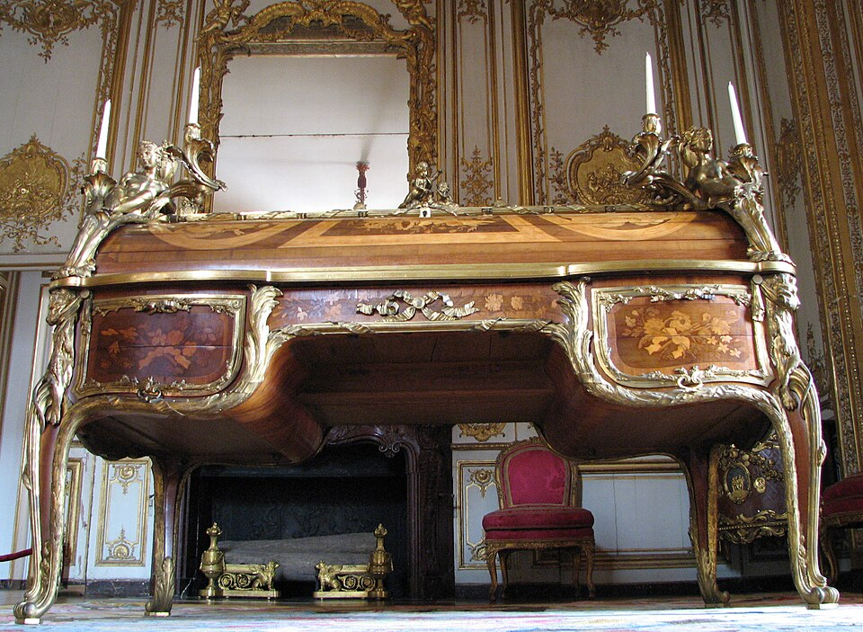
画像を拡大 ＋《国王のビューロー（ルイ15世の円筒蓋書机）》
- 作者
- ジャン＝フランソワ・オーベン、ジャン＝アンリ・リーズネル
- 制作時期
- 1760～1769年
- 所在地・所蔵
- ヴェルサイユ宮殿、国王の私室
- 素材・形式
- 家具・工芸
出典・画像について

《シテール島の巡礼（シテール島への船出、1717年ルーヴル版）》
- 作者
- アントワーヌ・ヴァトー
- 制作時期
- 1717年
- 所在地・所蔵
- ルーヴル美術館（INV 8525）
- 素材・形式
- 絵画
出典・画像について
ヴァトーは37歳で亡くなりながら、同時代へ多大な影響を与えました。裕福な人々の日常を描いても、画面は全体に暗く、どこか哀愁が漂います。ルイ14世の時代から、貴族は政治力を失い、特権だけを持つ階級となっていました。することを失って宴や恋で気晴らしをする、その鬱屈した感じを表したとも考えられます。

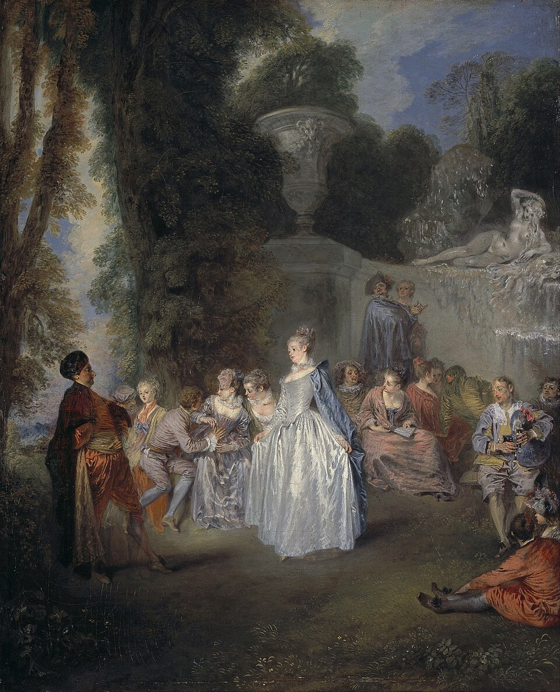
画像を拡大 ＋《ヴェネツィアの祝宴》
- 作者
- アントワーヌ・ヴァトー
- 制作時期
- 1718～1719年
- 所在地・所蔵
- スコットランド国立美術館（NG 439）
- 素材・形式
- 絵画
出典・画像について
動画表示1721年に対し、作品資料は1718～1719年。
画像出典：Jean-Antoine Watteau
Public domain（PD-Art）
作品情報：作品・画像・利用条件
制作メモ
画像の加工：出典で既存の補正あり・追加加工なし
ヴァトーの死後、唯一の弟子とされるジャン＝バティスト・パテルや、強く影響を受けたニコラ・ランクレが雅宴画を引き継ぎました。パテルは暗い背景を模倣しながら、人物の表情を豊かにし、憂鬱とも軽妙とも取れる画面を作ります。ランクレはさらに劇的な恋を描き、ヴァトーの寂しさは次第に薄れました。当時の貴族には、その方向が好まれたのでしょう。
同名・類似作品が複数あり、画面と同じ個体を確定できないため掲載保留。
《田舎暮らしの楽しみ（個体の外部照合保留）》
- 作者
- ジャン＝バティスト・パテル
- 制作時期
- 1730～1735年（画面表記）
- 所在地・所蔵
- 未確定
- 素材・形式
- 絵画
出典・画像について
同名・類似作品が複数あり、画面と同じ個体を確定できないため掲載保留。
ヤマザキマザック美術館所蔵の作品と確認できましたが、画像の再利用条件を確認できないため掲載保留。
《からかい》
- 作者
- ニコラ・ランクレ
- 制作時期
- 1736年
- 所在地・所蔵
- ヤマザキマザック美術館、名古屋
- 素材・形式
- 絵画
出典・画像について
ヤマザキマザック美術館所蔵の作品と確認できましたが、画像の再利用条件を確認できないため掲載保留。
作品情報：所蔵館：作品の同定
盛期ロココとポンパドゥール夫人
ポンパドゥール夫人と磁器・彫刻
動画 13:52～18世紀中頃、フランスのロココは最盛期を迎えました。ルイ15世の寵姫ジャンヌ＝アントワネット・ポワソン、ポンパドゥール夫人が大きく貢献します。文学、哲学、芸術を愛し、多くの芸術家のパトロンとなりました。パリ郊外のヴァンセンヌにあった小さな磁器工房はセーヴルへ移り、夫人好みの磁器が制作されます。独特のピンク色は「ローズ・ポンパドゥール」と呼ばれ、セーヴルの磁器はその出発から盛んな制作を見せました。
ピンク地・両端の仮面・独立した脚台を備える舟形容器の個体を確定できないため掲載保留。
《セーヴルのピンク地舟形花器（個体未確定）》
- 作者
- セーヴル磁器製作所とされる
- 制作時期
- 18世紀（個体未確定）
- 所在地・所蔵
- 未確定
- 素材・形式
- 磁器
出典・画像について
ピンク地・両端の仮面・独立した脚台を備える舟形容器の個体を確定できないため掲載保留。
夫人は身分に関わらず優れた芸術家を保護し、貧しい出身の彫刻家ファルコネも重用しました。依頼した彫刻には柔らかな表現があり、彼はセーヴル磁器製作所の彫刻部門長に任命されました。夫人の死後はロシアへ招かれ、サンクトペテルブルクのピョートル大帝騎馬像を制作します。依頼者に応じた異なる表現も、その才能を示しています。

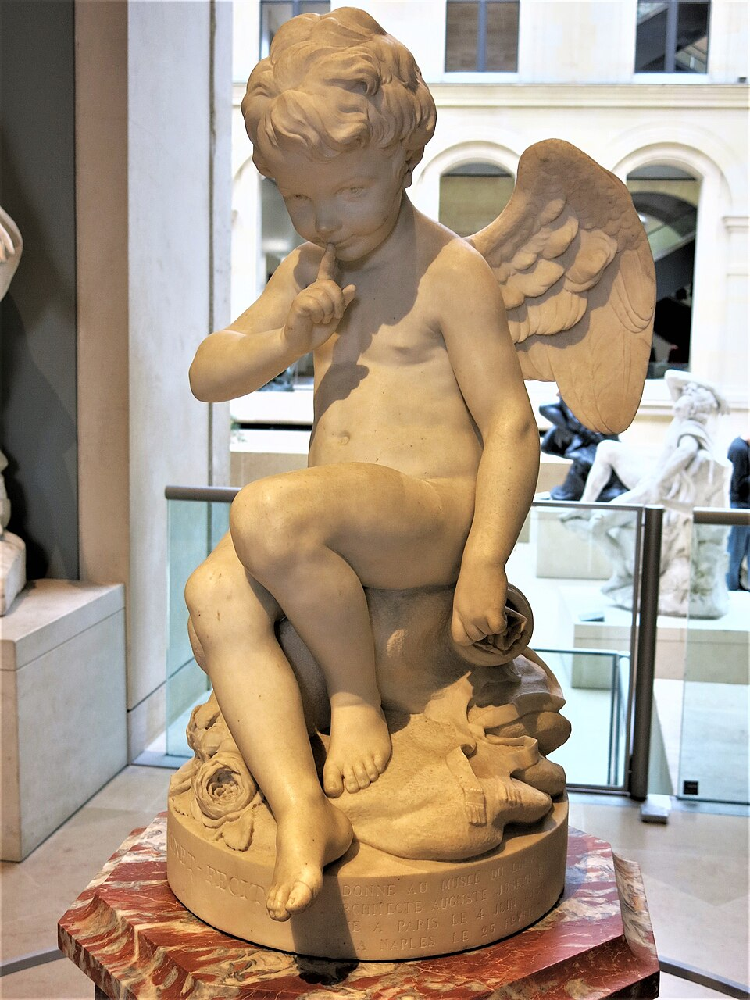
画像を拡大 ＋《威嚇するアモール（L’Amour menaçant）》
- 作者
- エティエンヌ＝モーリス・ファルコネ
- 制作時期
- 1757年
- 所在地・所蔵
- ルーヴル美術館（RF 296）
- 素材・形式
- 彫刻
出典・画像について

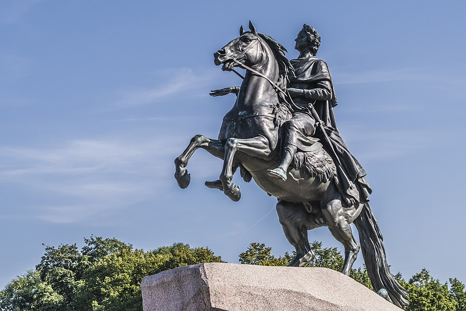
画像を拡大 ＋《青銅の騎士（ピョートル大帝騎馬像）》
- 作者
- エティエンヌ＝モーリス・ファルコネ
- 制作時期
- 1768～1782年
- 所在地・所蔵
- サンクトペテルブルク、元老院広場
- 素材・形式
- 青銅彫刻
出典・画像について
夫人が好んだブーシェ
動画 14:57～ポンパドゥール夫人がとくに好んだのが、多作で知られるブーシェでした。宮廷装飾からタピスリーの原画まで手がけ、当時の美意識を代表します。タピスリーは英語のタペストリーにあたります。ルイ14世時代からゴブラン工場で盛んだった制作に対し、ブーシェはそれと並ぶボーヴェ王立製作所にも原画を提供しました。
西洋で流行した中国趣味、シノワズリを取り入れた原画も、その仕事の一つです。異国への憧れは、磁器の模様にも表れました。

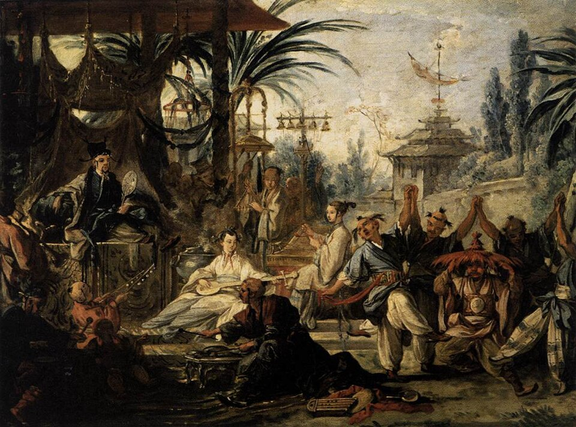
画像を拡大 ＋《中国の踊り（タピスリー連作のための習作）》
- 作者
- フランソワ・ブーシェ
- 制作時期
- 1742年
- 所在地・所蔵
- ブザンソン美術考古博物館（D.843.1.8）
- 素材・形式
- 絵画
出典・画像について
タピスリーそのものではなく、そのための油彩習作。動画表示1740年頃に対し作品資料1742年。
画像出典：François Boucher
Public domain（PD-Art）
作品情報：作品・画像・利用条件
ブーシェはギリシア神話も生き生きと描きました。女神たちはルネサンスの理想化された身体とは異なり、柔らかな裸体で、当時の上流階級の価値観を映しています。夫人は自身の肖像画も依頼し、美貌とともに、手の書籍が知性を表しました。盛期ロココを代表する画家らしい作品です。

《ヴィーナスの水浴（アモールを慰めるヴィーナス）》
- 作者
- フランソワ・ブーシェ
- 制作時期
- 1751年
- 所在地・所蔵
- ナショナル・ギャラリー・オブ・アート、ワシントン（1943.7.2）
- 素材・形式
- 絵画
出典・画像について

《ポンパドゥール夫人》
- 作者
- フランソワ・ブーシェ
- 制作時期
- 1756年
- 所在地・所蔵
- アルテ・ピナコテーク、ミュンヘン（HUW 18、長期寄託）
- 素材・形式
- 絵画
出典・画像について
ブーシェらの芸術活動や工房を支えたポンパドゥール夫人は、ロココ美術の重要な貢献者でした。一方、莫大な出費がフランスの借金をさらに増やしたとも語られます。
ロココの終わりと同時代の画家たち
ロココ最後の画家フラゴナール
動画 16:27～ヴァトー、ブーシェと主題が次第に軽くなるなか、生きる喜びを表すロココ絵画の最後を飾ったのが、ブーシェの弟子フラゴナールでした。主に貴族や収集家へ向け、軽妙で素早い筆触によって、さらに享楽的な作品を描きました。

《ぶらんこ》
- 作者
- ジャン＝オノレ・フラゴナール
- 制作時期
- 1767年
- 所在地・所蔵
- ウォレス・コレクション、ロンドン（P430）
- 素材・形式
- 絵画
出典・画像について
当時は財政悪化と民衆の不満が深まりました。そのなかで、今の楽しさを肯定するような絵画が求められたことには、上流階級の現実逃避もあったのかもしれません。1789年のフランス革命でロココは急速に衰え、人気を得たフラゴナールも忘れられていきます。1806年の訃報に、生きていたことを驚く人もいたという逸話が残ります。

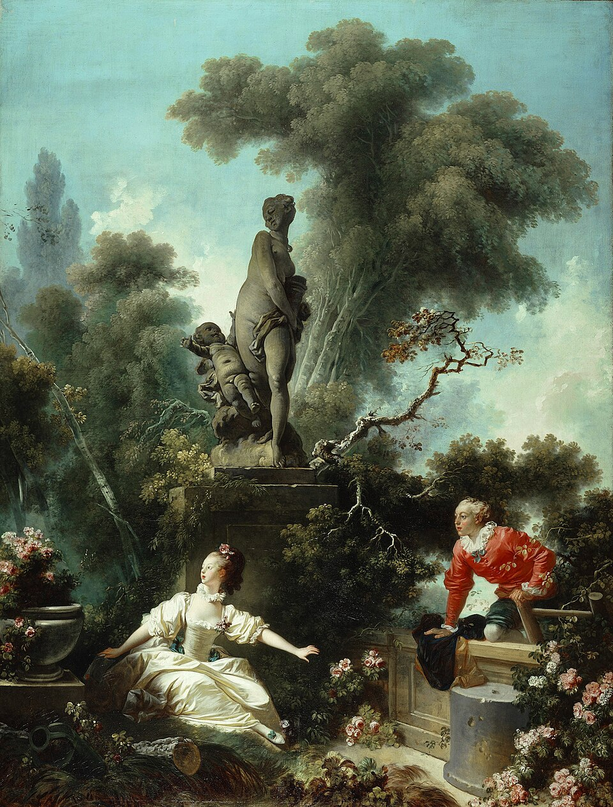
画像を拡大 ＋《逢引き（《恋の成り行き》より）》
- 作者
- ジャン＝オノレ・フラゴナール
- 制作時期
- 1771～1772年
- 所在地・所蔵
- フリック・コレクション、ニューヨーク（1915.1.46）
- 素材・形式
- 絵画
出典・画像について
ヴァトー、ブーシェ、フラゴナールは、ロココの三大巨匠とも呼ばれます。雅宴画に始まる絵画が次第に軽くなった理由は、貴族の立場や現実との関わりを通じても考えられます。ただし、この時代の絵画が、すべて軽妙だったわけではありません。
グルーズとシャルダンの風俗画
動画 17:50～ジャン＝バティスト・グルーズは、道徳的な風俗画を描きました。村の簡素な結婚の場面などには、ロココらしい軽さがありません。上流階級の日常を描く雅宴画に飽きた人々や、中流階級から支持を集めました。

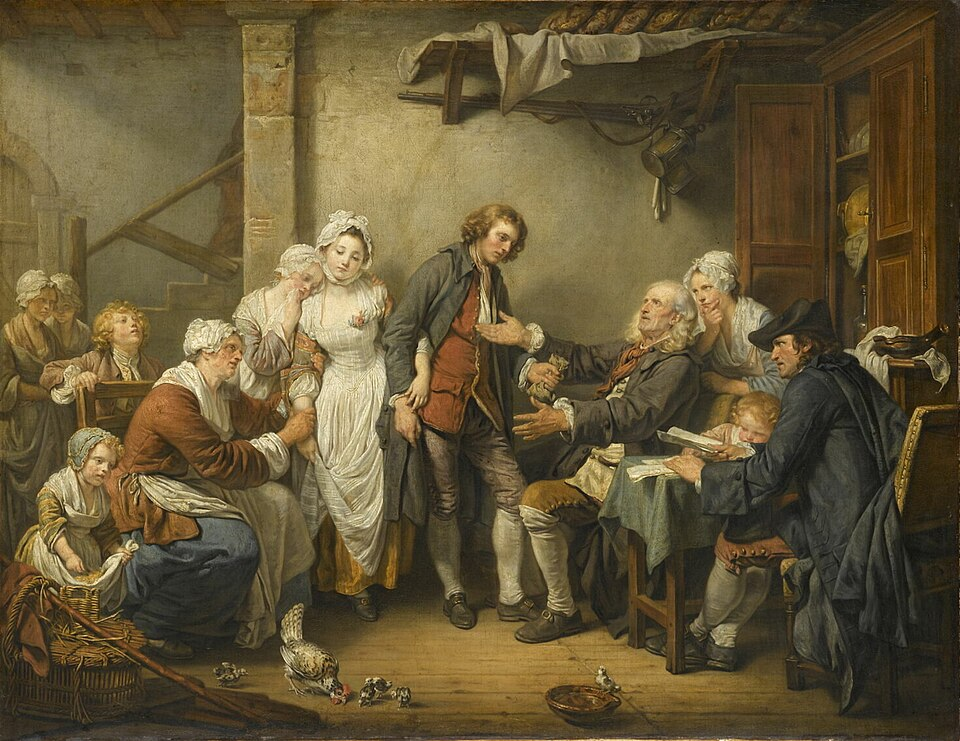
画像を拡大 ＋《村の花嫁（L’Accordée de village）》
- 作者
- ジャン＝バティスト・グルーズ
- 制作時期
- 1761年
- 所在地・所蔵
- ルーヴル美術館（INV 5037）
- 素材・形式
- 絵画
出典・画像について
さらに落ち着いた画風で人気を得たのが、ブーシェと同時代のシャルダンです。歴史画が最上位とされた時代に、風俗画を描きながらアカデミーの重役を任されました。質素でも温かい作風から、「大画家ではないが、偉大な画家」と評されました。《食前の祈り》で祈りを捧げている子供は、男の子です。

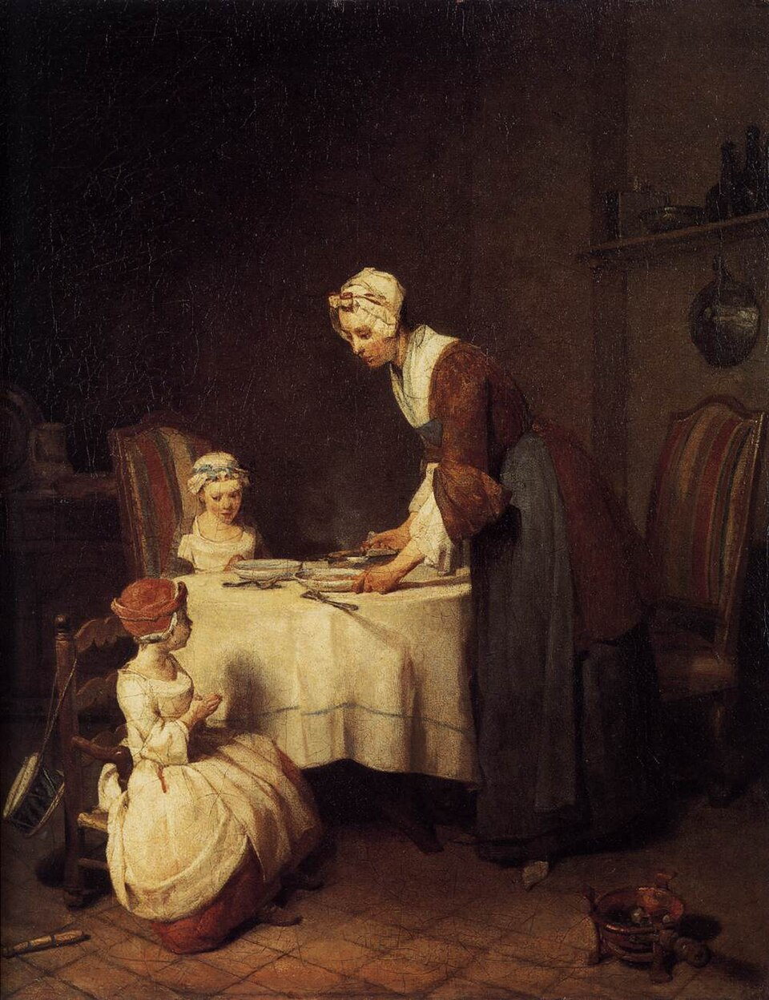
画像を拡大 ＋《食前の祈り（ルーヴルINV 3202版）》
- 作者
- ジャン＝バティスト＝シメオン・シャルダン
- 制作時期
- 1740年
- 所在地・所蔵
- ルーヴル美術館（INV 3202、MR 1325）
- 素材・形式
- 絵画
出典・画像について
シャルダンは、序列の最下位とされた静物画も多く描きました。入会の契機となった《赤えい》や、日常の食物を主題とする作品など、時代の好みに縛られない絵画を追求しました。

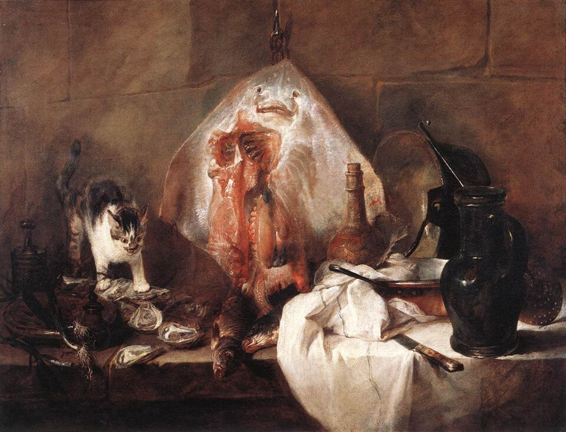
画像を拡大 ＋《赤エイ》
- 作者
- ジャン＝バティスト＝シメオン・シャルダン
- 制作時期
- 1728年
- 所在地・所蔵
- ルーヴル美術館（INV 3197）
- 素材・形式
- 絵画
出典・画像について

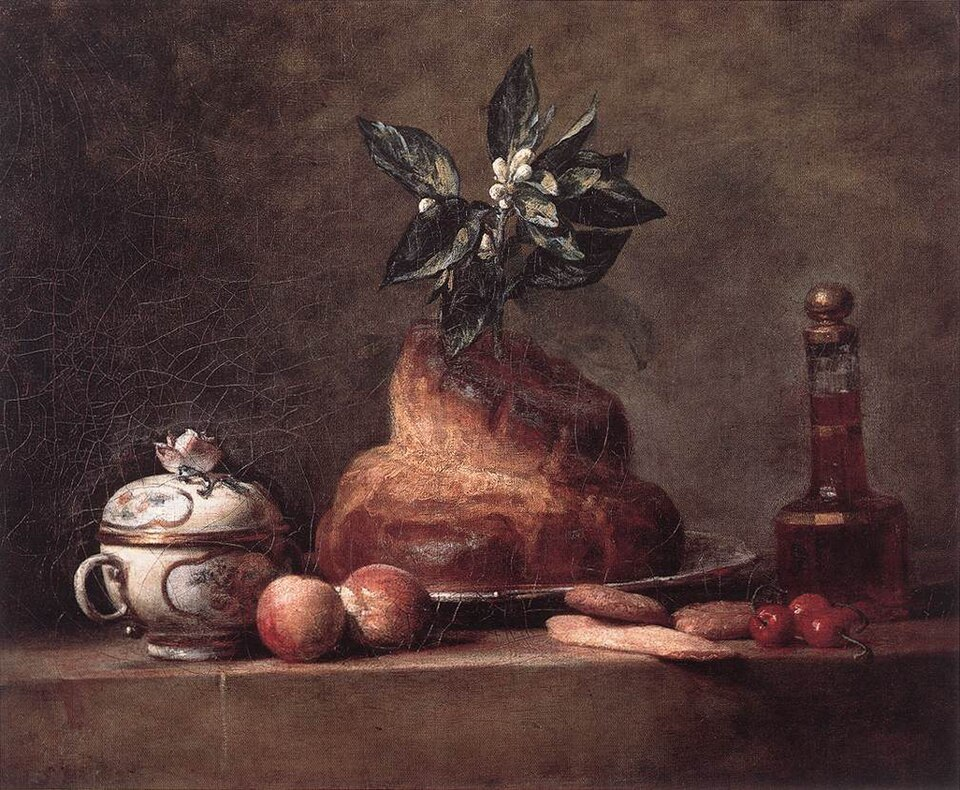
画像を拡大 ＋《ブリオッシュ》
- 作者
- ジャン＝バティスト＝シメオン・シャルダン
- 制作時期
- 1763年
- 所在地・所蔵
- ルーヴル美術館（MI 1038）
- 素材・形式
- 絵画
出典・画像について
女性画家ヴィジェ＝ルブラン
動画 18:54～当時のアカデミーでは、古代彫刻に男性裸体像があることなどを理由に、女性の入会は不適切とされていました。次第に制限が緩み、少数ながら認められるようになります。そのなかで最も活躍した一人が、ヴィジェ＝ルブランです。ルイ16世の王妃マリー・アントワネットの専属画家となり、その肖像を手がけました。

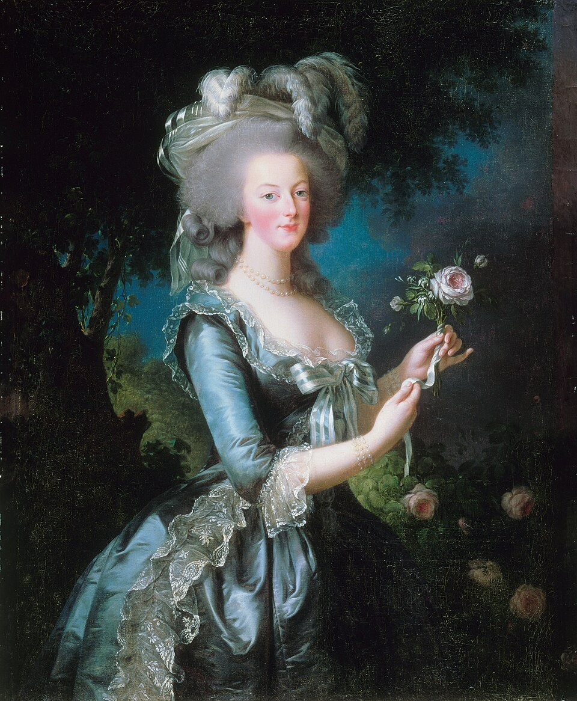
画像を拡大 ＋《バラを持つマリー・アントワネット》
- 作者
- エリザベート＝ルイーズ・ヴィジェ＝ルブラン
- 制作時期
- 1783年
- 所在地・所蔵
- ヴェルサイユ宮殿（MV 3893）
- 素材・形式
- 絵画
出典・画像について
王妃は革命の末に処刑されました。王室との関係が深かったヴィジェ＝ルブランも亡命しますが、滞在先でも王侯らを相手に画業で生計を立てました。容易な生活ではなかったでしょうが、十数年の亡命期を、後に楽しかったと振り返っています。
フランスのロココは100年にも満たず、新古典主義へ移りました。それでも、従来にない自由な作風が生まれ、フランスが芸術の中心となる契機を作った重要な時代でした。
18世紀のイギリス
イギリス美術とグランド・ツアー
動画 20:02～イギリスでは17世紀まで、外国人画家が主役でした。ルネサンスにはドイツのハンス・ホルバイン、バロックにはフランドルのヴァン・ダイクを宮廷へ招いています。18世紀にイギリス人による美術が開花した背景には、裕福な貴族のグランド・ツアーがありました。
17世紀頃から、若者は学業の締めくくりに大陸へ出かけ、近隣国の文化を学びました。フランスを経由し、古典美の頂点と考えられたイタリアへ向かい、美術収集品を見学し、土産として作品を購入しました。持ち帰った品々も、自国の美術へ影響したのです。
社会を風刺したホガース
動画 20:59～18世紀初め、ウィリアム・ホガースが登場します。当時の世相を風刺した《当世風の結婚》は、金銭を求める貧乏貴族の青年と、身分を求める成金の娘が結婚し、破綻する過程を描く連作です。涙を流す花嫁、無関心な花婿、その二人を顧みず話し合う両家の父親が、社会を痛烈に批判しています。

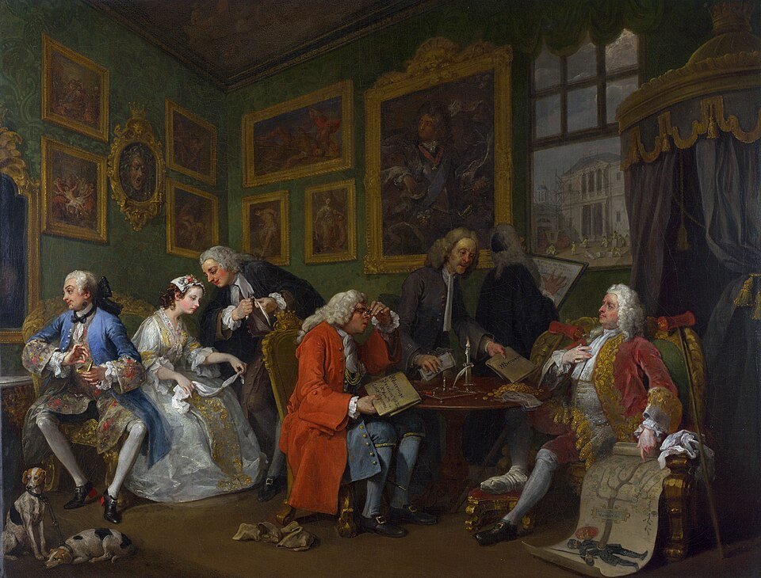
画像を拡大 ＋《当世風の結婚：第1場「結婚契約」》
- 作者
- ウィリアム・ホガース
- 制作時期
- 1743年頃
- 所在地・所蔵
- ナショナル・ギャラリー、ロンドン（NG113）
- 素材・形式
- 絵画
出典・画像について
イギリスは芸術以外の分野では、早くから発展していました。ニュートンの万有引力の研究は、教会が説いてきた宇宙観を問い直す力となります。経験論の父と呼ばれるジョン・ロックの啓蒙思想や、絶対王政から立憲君主政へ向かう名誉革命も、その背景にありました。教会や権力者が作ってきた世界を批判的に見る態度が、風刺画を好む土壌になったのです。
ホガースは、イギリス人芸術家の地位向上のため、教育や制度の整備にも努めました。1768年にはロンドンにロイヤル・アカデミーが設立され、ジョシュア・レノルズを初代会長として教育体制が整えられます。しかし、ここでもラファエロらを手本とした歴史画が最も重視されました。
イギリスの肖像画
動画 22:31～ロイヤル・アカデミーでは歴史画が重視されましたが、顧客のイギリス人には歴史画があまり流行せず、教える立場のレノルズ自身も主に肖像画を描きました。人物の全身、風景、動物を組み合わせる形式には、ヴァン・ダイクの影響が見られ、イギリスの定番となりました。

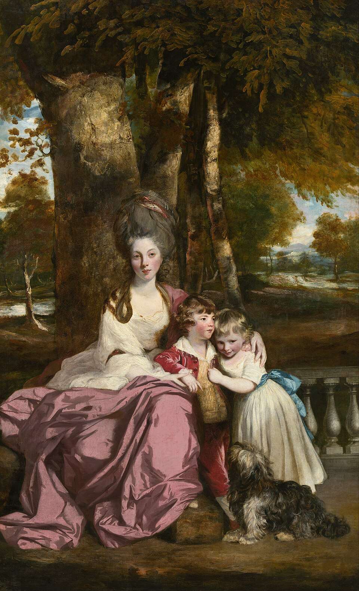
画像を拡大 ＋《エリザベス・デルメ夫人とその子供たち》
- 作者
- ジョシュア・レノルズ
- 制作時期
- 1777～1779年
- 所在地・所蔵
- ナショナル・ギャラリー・オブ・アート、ワシントン（1937.1.95）
- 素材・形式
- 絵画
出典・画像について
ホガースは、家族の団らんを表す小規模な集団肖像画「カンヴァセーション・ピース」も発展させました。フランスの雅宴画とは異なる、この形式は、新興市民階級に人気を得ました。

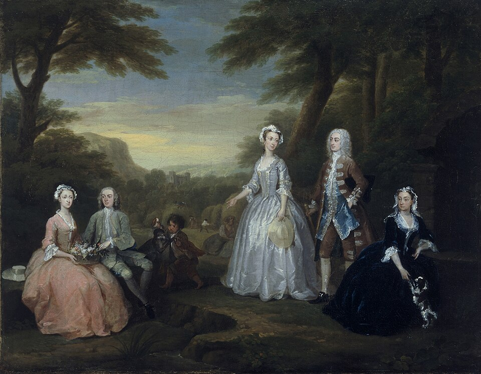
画像を拡大 ＋《ジョーンズ家のカンヴァセーション・ピース》
- 作者
- ウィリアム・ホガース
- 制作時期
- 1730年
- 所在地・所蔵
- ウェールズ国立博物館、カーディフ（NMW A 3978）
- 素材・形式
- 絵画
出典・画像について
肖像画のなかでも風景を重視したのが、トマス・ゲインズバラです。数多くの肖像で人気を得ましたが、本当に描きたかったのは風景でした。「肖像画は生活のため、風景画は楽しみのため」といった言葉でも知られます。人物以上に風景へ力を注ぐような表現は、19世紀のコンスタブルやターナーにも影響し、後のロマン主義へつながりました。

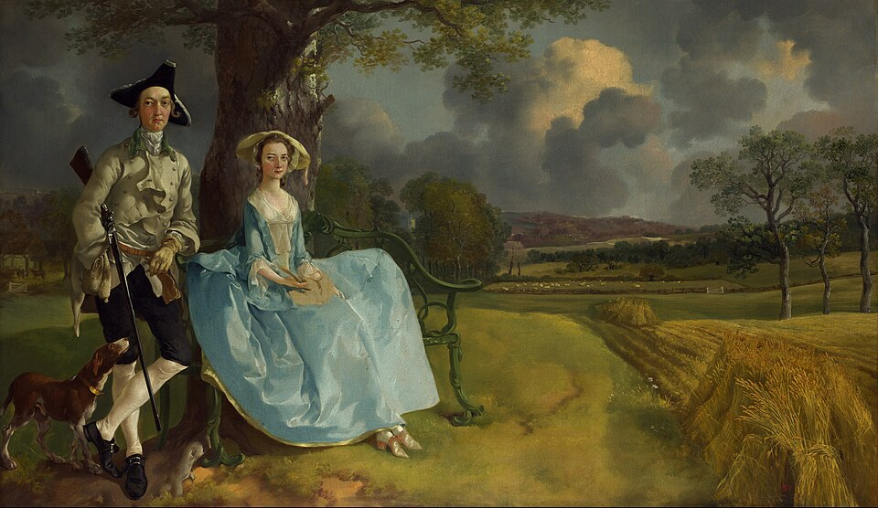
画像を拡大 ＋《アンドリューズ夫妻》
- 作者
- トマス・ゲインズバラ
- 制作時期
- 1748～1750年頃
- 所在地・所蔵
- ナショナル・ギャラリー、ロンドン（NG6301）
- 素材・形式
- 絵画
出典・画像について
18世紀のイタリア
カナレットとピラネージ
動画 23:50～18世紀のイタリアは、経済的な低迷とともに、かつての芸術の中心という位置を失いました。それでも、各国からの観光客に向けた都市景観画が土産として人気を得ます。ヴェネツィアのカナレットは、写実的で色鮮やかな風景によって、とくにイギリスの収集家に好まれ、自らも同国に滞在しました。

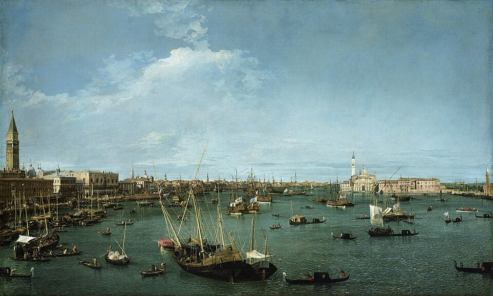
画像を拡大 ＋《ヴェネツィア、サン・マルコ湾》
- 作者
- カナレット（ジョヴァンニ・アントニオ・カナル）
- 制作時期
- 1738年頃
- 所在地・所蔵
- ボストン美術館（39.290）
- 素材・形式
- 絵画
出典・画像について
同じくヴェネツィアに生まれたピラネージは、ローマの古代遺跡を研究し、精密な版画へ残しました。現地を訪れたことのない人々にも、遺跡の姿を伝え、後の新古典主義へ影響しました。

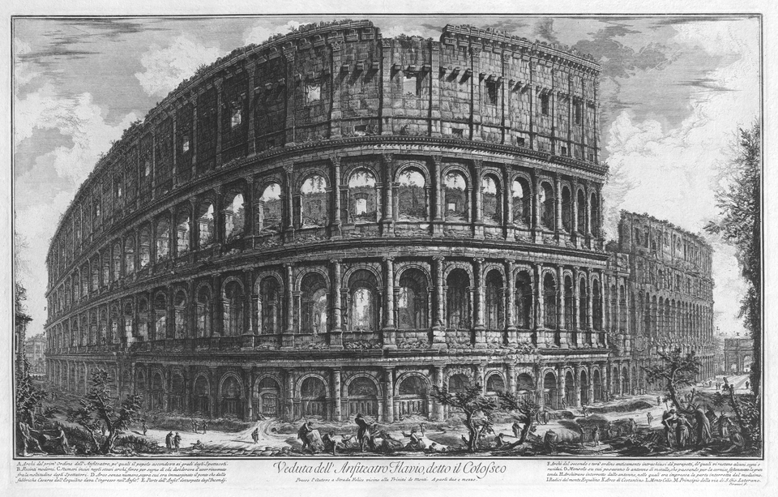
画像を拡大 ＋《フラウィウス円形闘技場（コロッセウム）の眺め》
- 作者
- ジョヴァンニ・バッティスタ・ピラネージ
- 制作時期
- 1757年
- 所在地・所蔵
- 同版の刷りは各地に所蔵。掲載画像の刷りの現所蔵は出典に記載なし
- 素材・形式
- 版画
出典・画像について
同じ原版の図像を確認していますが、掲載画像の刷りの現所蔵先までは出典に記載がありません。
画像出典：Giovanni Battista Piranesi
Public domain（PD-Art / PD-old-100-expired）
作品情報：作品・画像・利用条件
ロンギとティエポロ
動画 24:36～18世紀のイタリアでは風景画だけでなく、ピエトロ・ロンギが富裕な市民の日常を描く風俗画を数多く制作し、「ヴェネツィアのホガース」とも呼ばれました。ただし皮肉な風刺というより、陽気な表現が印象的です。宗教画や神話画だけではない、イタリア美術の一面でした。

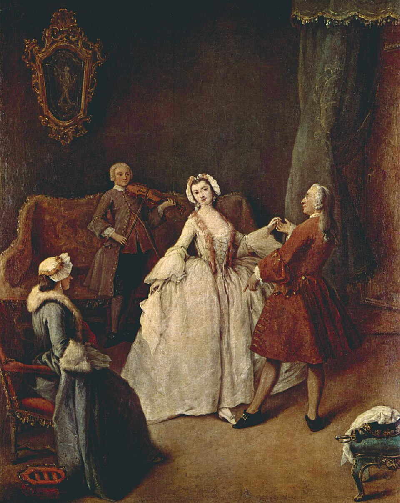
画像を拡大 ＋《ダンスの練習》
- 作者
- ピエトロ・ロンギ
- 制作時期
- 1741年頃
- 所在地・所蔵
- アカデミア美術館、ヴェネツィア
- 素材・形式
- 絵画
出典・画像について
ティエポロは、バロックの様式を引き継ぎながら、ロココの鮮やかな色彩を取り入れました。晩年にはスペインの宮廷へ招かれ、王家の栄光を称える天井画を制作します。ベラスケスと並ぶスペインの宮廷画家ゴヤにも、大きな影響を与えたといわれます。

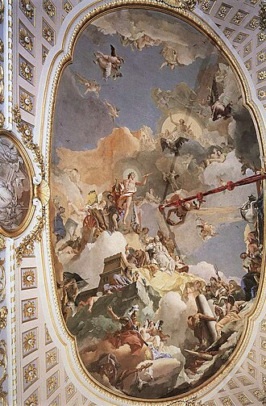
画像を拡大 ＋《スペイン王政の神格化（天井画全景）》
- 作者
- ジョヴァンニ・バッティスタ・ティエポロ
- 制作時期
- 1762～1766年
- 所在地・所蔵
- マドリード王宮・王妃控えの間
- 素材・形式
- 天井画・フレスコ装飾
出典・画像について
動画の題名《スペインの栄光》と実画に相違があり、ここでは画面部分に対応する《スペイン王政の神格化》の全景を掲載。玉座の間の別天井画と区別します。
画像出典：Giovanni Battista Tiepolo
Public domain（PD-Art）
作品情報：作品・画像・利用条件
制作メモ
配信画像は低解像度です。
天井画の補足
映像の題名は《スペインの栄光》ですが、表示された部分は《スペイン王政の神格化》の図像に対応します。玉座の間の《スペインの栄光》とは別の、王妃控えの間の天井画全景を掲載し、題名と部屋を区別しました。
確認資料：同定した全景・作品情報
18世紀のイタリアにも啓蒙思想が及び、教会の力が弱まるなか、宗教画の位置は変化しました。中心地の地位をフランスへ譲っても、それまで西洋全体へ与えた影響は大きく、この時代の各国の芸術家も、ルネサンスの巨匠を尊敬していました。
スペインとゴヤ
スペイン宮廷とゴヤ
動画 25:42～かつて「太陽の沈まぬ国」だったスペインも、18世紀には繁栄が遠のきます。1700年にハプスブルク家の王統が絶え、継承戦争を経てブルボン家が統治しました。フランス王家と同じブルボン家となったこともあり、その後はフランスの国際戦争の多くで、同じ側に立ちます。他国が啓蒙思想の影響で近代化する一方、スペインには封建制度と教会の支配が残り、宮廷美術も続きました。ティエポロの招聘も、そのなかの出来事です。
その影響を受けたゴヤは、初期には明るい色彩と生き生きした表現によって、スペインのロココ絵画を象徴しました。1780年代には上流貴族を顧客とし、カルロス3世にも認められて宮廷画家となります。1792年、不幸にも原因不明の病で聴覚を失いました。

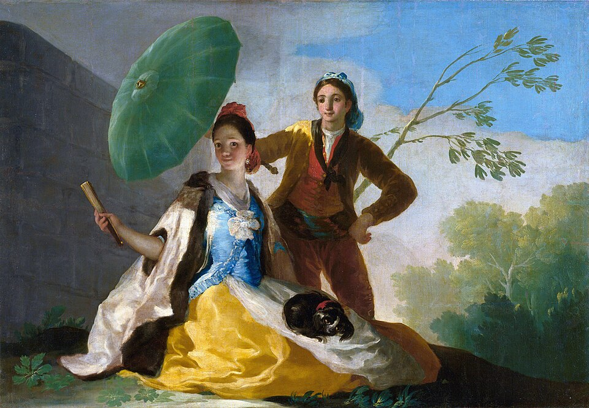
画像を拡大 ＋《日傘》
- 作者
- フランシスコ・デ・ゴヤ
- 制作時期
- 1777年
- 所在地・所蔵
- プラド美術館、マドリード（P000773）
- 素材・形式
- 絵画
出典・画像について
画像出典：Francisco Goya
Public domain（PD-Art / PD-old-100-expired）
作品情報：作品・画像・利用条件
制作メモ
画像の加工：出典で既存の補正あり・追加加工なし
それでも、代表作《カルロス4世の家族》は、聴覚を失った後に描かれました。鮮やかな色彩と独特の筆触で描かれたこの作品は、ベラスケスと並ぶ巨匠にふさわしい傑作です。一方で、制作理由のよく分からない絵画も手がけるようになります。

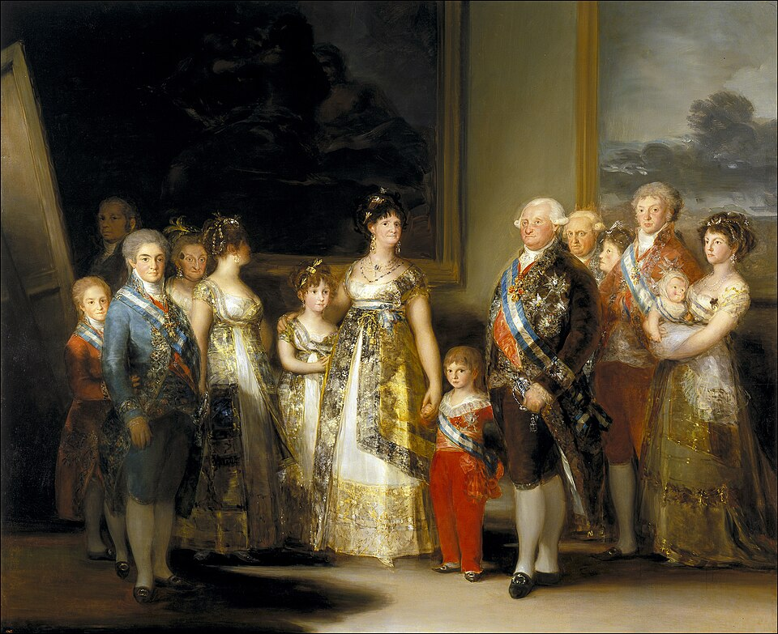
画像を拡大 ＋《カルロス4世の家族》
- 作者
- フランシスコ・デ・ゴヤ
- 制作時期
- 1800～1801年
- 所在地・所蔵
- プラド美術館、マドリード（P000726）
- 素材・形式
- 絵画
出典・画像について
その一つが《裸のマハ》です。依頼者は、おそらく当時の首相マヌエル・デ・ゴドイとされます。露骨な裸体表現はスキャンダルとなり、ゴヤは追及を受けました。《着衣のマハ》も制作され、裸体画を隠すためだったともいわれます。初期にロココ、晩年にロマン主義の時代を生きたゴヤは、この後の美術でも重要な位置を占めます。

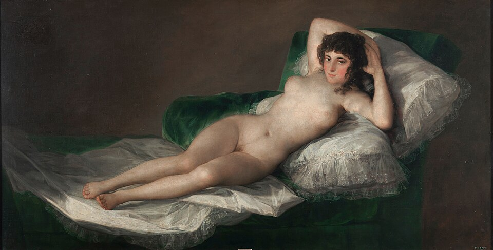
画像を拡大 ＋《裸のマハ》
- 作者
- フランシスコ・デ・ゴヤ
- 制作時期
- 1795～1800年
- 所在地・所蔵
- プラド美術館、マドリード（P000742）
- 素材・形式
- 絵画
出典・画像について
画像出典：Francisco Goya
Public domain（PD-Art / PD-old-100-expired）
作品情報：作品・画像・利用条件
制作メモ
画像の加工：出典で既存の補正あり・追加加工なし

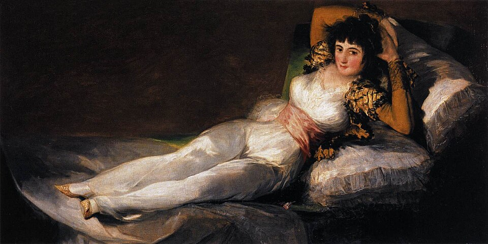
画像を拡大 ＋《着衣のマハ》
- 作者
- フランシスコ・デ・ゴヤ
- 制作時期
- 1800～1807年
- 所在地・所蔵
- プラド美術館、マドリード（P000741）
- 素材・形式
- 絵画
出典・画像について
動画表示1795～1800年に対し、プラド作品資料の1800～1807年を記載。
画像出典：Francisco Goya
Public domain（PD-Art / PD-old-100-expired）
作品情報：作品・画像・利用条件
次の時代へ
新古典主義へ
動画 27:44～18世紀フランスを中心とするロココは、行き過ぎた古典への傾倒に反発し、生きる喜びを優雅に表現しました。しかし、その軽妙さが新たな反発も生み、古典を再び頂点とする新古典主義が現れます。時代は近世から近代へ移り、美術も大きく変化していきました。
要点まとめ
- ロココは18世紀のフランスを中心とする美術潮流。語源は人工洞窟を飾る岩や貝殻の装飾「ロカイユ」で、装飾芸術では貝殻を思わせる曲線を多く用いる。成立には女性貴族が大きく関わった。
- 背景には16〜17世紀のフランス王権がある。フランソワ1世がレオナルド・ダ・ヴィンチを保護してフォンテーヌブロー派が生まれ、1516年のボローニャ政教協約で国王が教会に強い権限を持った（ガリカニスム）。アンリ4世はナントの王令でユグノーの信仰を認め、宗教より国家の利益を優先する国家理性（レゾン・デタ）がとられた。
- 1648年、シャルル・ル・ブランらが王立絵画彫刻アカデミーを設立した。輪郭線と素描を重んじるプッサン派と色彩を重んじるルーベンス派の「色彩論争」、歴史画を頂点とする絵画のヒエラルキー、展覧会「サロン」が美術界を長く左右した。
- 1715年にルイ14世が亡くなり、摂政時代に貴族が生きる喜びを享受するなかでロココが生まれた。政治の中心がパリへ移り、オテル（邸宅）では白い壁と金の枠の室内が作られた。絵画では新しいジャンル「雅宴画（フェート・ギャラント）」が成立した。
- 雅宴画のヴァトーは37歳で亡くなったが、哀愁の漂う画面で大きな影響を与えた。唯一の弟子とされるパテルと、影響を受けたランクレが雅宴画を引き継いだ。
- 18世紀中頃の盛期ロココは、ルイ15世の寵姫ポンパドゥール夫人が支えた。セーヴルの磁器（ピンク色の「ローズ・ポンパドゥール」）、彫刻家ファルコネ、タピスリーの原画やシノワズリ、神話画を手がけたブーシェを保護した。
- ヴァトー、ブーシェ、ブーシェの弟子フラゴナールは「ロココの三大巨匠」とも呼ばれる。ロココは1789年のフランス革命で急速に衰えた。軽さとは異なる画家として、道徳的な風俗画のグルーズ、《食前の祈り》や静物画《赤えい》のシャルダン、王妃マリー・アントワネットの専属画家となった女性画家ヴィジェ＝ルブランがいる。
- イギリスでは、グランド・ツアーを背景に18世紀にイギリス人による美術が開花した。ホガースは連作《当世風の結婚》で社会を風刺し、集団肖像画「カンヴァセーション・ピース」を発展させた。1768年にロイヤル・アカデミーが設立され（初代会長レノルズ）、ゲインズバラは肖像画のなかで風景を重視した。
- 18世紀のイタリアでは、カナレットの都市景観画、ピラネージの古代遺跡の版画、「ヴェネツィアのホガース」と呼ばれたロンギの風俗画、ティエポロの天井画が生まれた。スペインではゴヤが宮廷画家となり、《カルロス4世の家族》や《裸のマハ》《着衣のマハ》を描いた。
- ロココの軽妙さは新たな反発も生み、古典を再び頂点とする新古典主義が現れた。
確認問題
答えを考えてから開いてください。選択問題は選ぶとすぐ正誤と解説が出ます（選択肢の順番は開くたびに変わります）。各問題のリンクから該当の章や作品カードへ戻れます。
選択問題：0／5問回答・正解0
A. 一問一答答えを考えてから開く
問1「ロココ」の語源で、主に人工洞窟を飾る岩や貝殻の装飾を指したフランス語は何か。
答えを見る
問2豊かな自然のなかで、流行の服を着た男女が優雅に集う上流階級の日常を表す、ロココで成立した絵画のジャンルは何か。
答えを見る
問3ホガースが発展させた、家族の団らんを表す小規模な集団肖像画の形式を何と呼ぶか。
答えを見る
B. 4択選ぶとすぐ正誤と解説
問4フランスの王立絵画彫刻アカデミーが定めた絵画のヒエラルキーで、頂点に置かれたジャンルはどれか。
→ 本文で確認（色彩論争と絵画のヒエラルキー）
問5ロココの三大巨匠に含まれない画家は誰か。
→ 本文で確認（ロココ最後の画家フラゴナール）
問6ルイ15世の寵姫で、セーヴルの磁器制作やブーシェらを支えたロココの重要な貢献者は誰か。
→ 本文で確認（ポンパドゥール夫人と磁器・彫刻）
C. 図版問題画像を見て答える
問7この作品の名前と作者を答えよ。
答えを見る
問8この作品の作者は誰か。
→ 作品カードで確認
問9この作品の作者は誰か。
→ 作品カードで確認